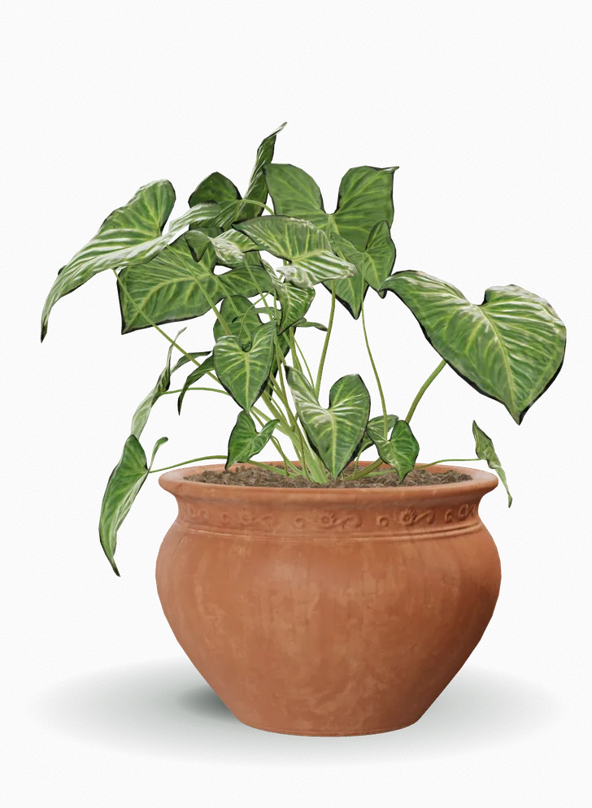
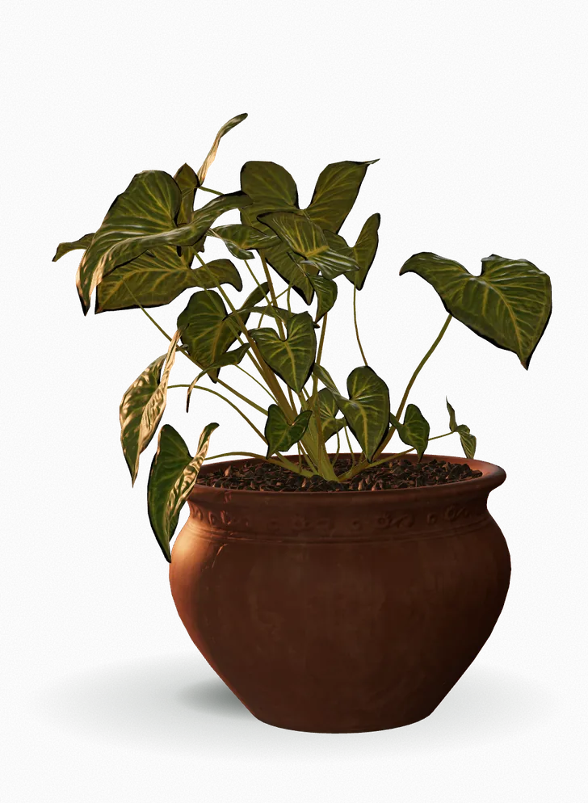
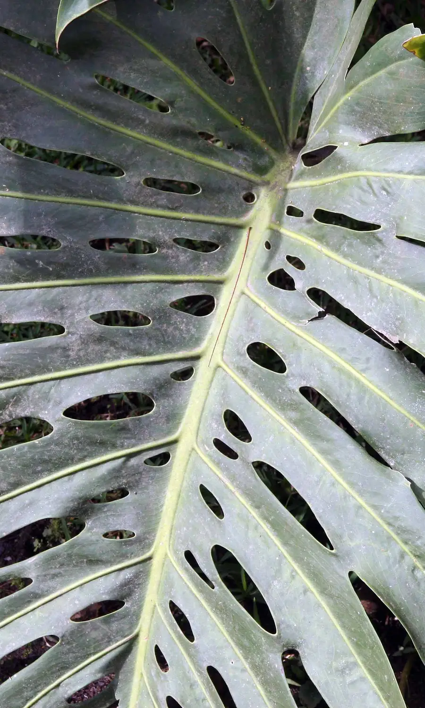
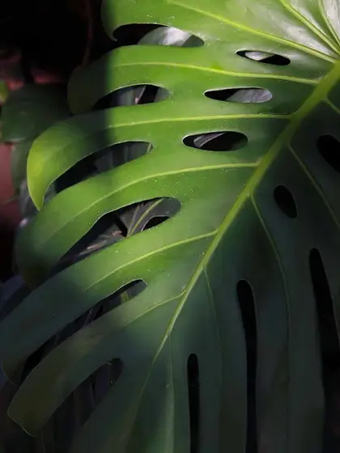
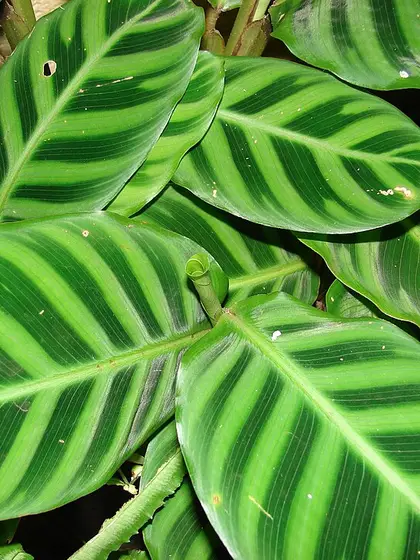
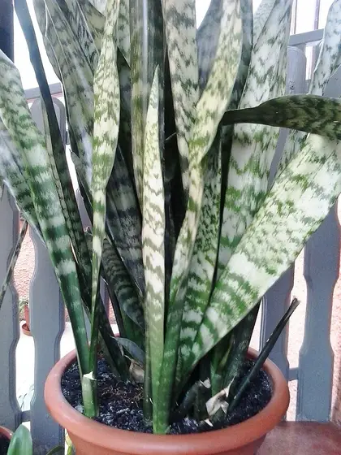
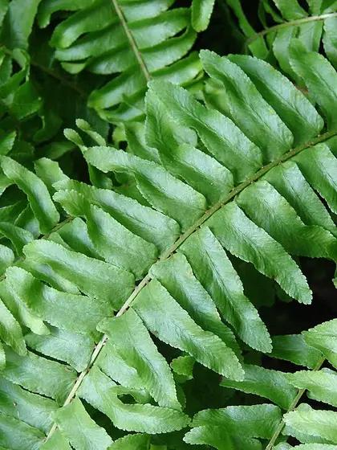
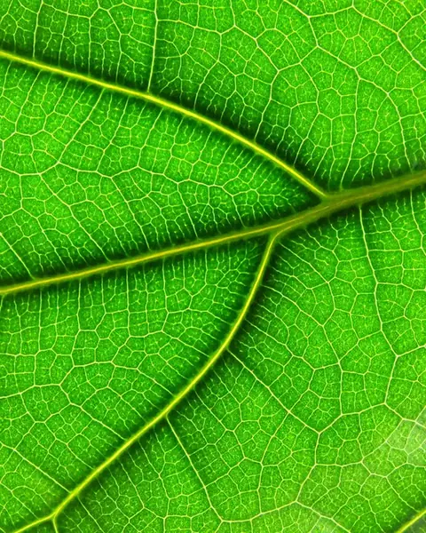

Indoor plant studio
Slow-grown in our glasshouse, potted in breathable clay and matched to the light you actually have.



Bring the outside in.
Every plant spends a full season under glass before it leaves us, so it arrives already used to life indoors.
- 1 seasonunder glass
- Claypots that breathe
- 4light types matched
The collection
Four easy companions.
-

01
Monstera
Monstera deliciosa
Big split leaves that turn a corner into a jungle.
Concept piece -
Low-light ready

02
Calathea
Goeppertia zebrina
Velvet stripes that fold up at night.
Concept piece -
Low-light ready

03
Snake plant
Dracaena trifasciata
Upright, unbothered, happy in a dim hallway.
Concept piece -

04
Boston fern
Nephrolepis exaltata
Soft fronds for bathrooms and bright shelves.
Concept piece
Care guide
Light, water, air.
How much light?
Most of our plants love a bright room without direct midday sun.
- Monstera
- Calathea
- Snake plant
- Boston fern
Let your room breathe.
Bring a photo of your window. We will match a plant to its light and pot it while you wait.
Book a studio visit